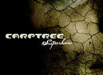

| Artist: | Carptree |
| Title: | Superhero |
| Label: | Fosfor Creation |
| Length(s): | 61 minutes |
| Year(s) of release: | 2003 |
| Month of review: | [08/2003] |
| 1) | Superhero | |
| 2) | Fathers House | |
| 3) | Calm Sea Of Their Pupils | |
| 4) | There Like Another | |
| 5) | Host Vs. Graft | |
| 6) | Watching The Clock | |
| 7) | Into The Never To Speak Of | |
| 8) | Flesh | |
| 9) | Malfunction | |
| 10) | Lie Down | |
| 11) | Sleep |
Fathers House vocal line has the exchange between synth backing and piano on a military drum roll, slowly building to the mid section, taking it a step further. The atmosphere in this track is striking. Like its predecessor, the track moves towards a large emotional climax.
Calm Sea Of Their Pupils kicks of right away, with the sound of crashes and eerie vocals more or less skipping the build up, and moving seemingly directly into what is at least a bit eclectic, slowing down to the quiet but never quite reaching it in being surpassed by the climax.
There Like Another is another track floating on the melancholy synth and still piano. Yet another good track, but maybe a bit too much like its predecessors in its build up and atmosphere.
Even though the synths smooth it over, Host vs. Graft is less of a melancholy and more of a purely melodic, almost poppy, or neo proggy track, with Mark Kelly keys towards the end.
Watching The Clock leans heavily on the piano, making it almost a piano vocal track, but the sound and the synth is just a tad too full for that.
Into The Never To Speak Of opens up a heavy guitar sound, reminiscent of Anekdoten. Although things calm down after that, the track is definitely more raw than others on the album, making for a welcome change.
Flesh is a bit more eclectic again, stronger on vocals and instruments. The chorus reminds me of eighties Gabriel tracks. Towards the end of the track the melancholy takes over again.
Malfunction has a technical feel about it, with seemingly computerized narrator and vocoder sounds, as well as big, electronic, orchestration. In this it is somewhat reminiscent of mid eighties band Propaganda.
Lie Down is still pretty strong, but no longer as electronic. The track has its poppy sides.
Closer Sleep is somewhat bitter, more gentle once again, but not smoothed over so much as earlier tracks, making it closer combining the influences on the album.